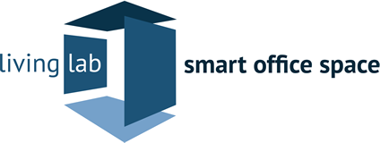

Living Lab · Demo für Schülerinnen und Schüler
Wie reagiert ein intelligenter Raum?
Licht, Jalousien und elektrochrome Fenster arbeiten zusammen.

Der Raum
KONZEPTSIMULATION
☀ Tageslicht
↕ Jalousien
◐ Elektrochromes Glas
Wetter / Tageslicht
→
Sensoren
→
Steuerung
→
Raum
Was passiert draußen?
Wähle ein Szenario. Beobachte, wie sich Glas, Jalousien und Beleuchtung verändern.
Steuerungsmodus
Automatisch folgt dem Wetter; manuell ermöglicht separate Einstellungen für Glas und Jalousien.
Elektrochromes Glas
Stelle die Tönung für jede der drei Reihen über alle vier Fenster ein.
KeineMittelVoll
Oben
Mitte
Unten
Jalousien
Beleuchtung
AusMaximal
Elektrochromes GlasAutomatisch
JalousienTeilweise unten
Künstliches LichtReduziert
ZielWeniger Blendung